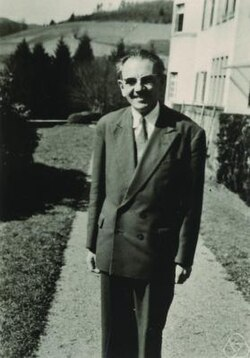

Jean Leray | |
|---|---|
 Jean Leray at Oberwolfach in 1961 | |
| Born | 7 November 1906 Chantenay-sur-Loire (today part of Nantes) |
| Died | 10 November 1998 (aged 92) |
| Alma mater | École Normale Supérieure |
| Known for | Partial differential equations Algebraic topology Global hyperbolicity Sheaf theory Sheaf cohomology Leray cover Leray projection Leray's theorem Leray spectral sequence Leray–Hirsch theorem Leray–Schauder degree |
| Awards | Prix Francoeur (1937) Malaxa Prize (1938) Feltrinelli Prize (1971) John von Neumann Prize(1962) Wolf Prize (1979) Lomonosov Gold Medal (1988) |
| Scientific career | |
| Fields | Mathematics |
| Institutions | University of Nancy University of Paris Collège de France |
| Henri Villat | |
Doctoral students | Armand Borel István Fáry |
Jean Leray (French: [ləʁɛ]; 7 November 1906 – 10 November 1998)[1] was a French mathematician, who worked on both partial differential equations and algebraic topology.
He was born in Chantenay-sur-Loire (today part of Nantes). He studied at École Normale Supérieure from 1926 to 1929. He received his Ph.D. in 1933. In 1934 Leray published an important paper that founded the study of weak solutions of the Navier–Stokes equations.[2] In the same year, he and Juliusz Schauder discovered[3] a topological invariant, now called the Leray–Schauder degree, which they applied to prove the existence of solutions for partial differential equations lacking uniqueness.
From 1938 to 1939 he was professor at the University of Nancy. He did not join the Bourbaki group, although he was close with its founders.
His main work in topology was carried out while he was a prisoner of war in a camp in Edelbach, Austria from 1940 to 1945. He concealed his expertise on differential equations, fearing that its connections with applied mathematics could lead him to be asked to aid the German war effort.
Leray's work of this period proved seminal to the development of spectral sequences and sheaves.[4] These were subsequently developed by many others,[5] each separately becoming an important tool in homological algebra.
He returned to work on partial differential equations from about 1950.
He was professor at the University of Paris from 1945 to 1947, and then at the Collège de France until 1978.
He was awarded the Malaxa Prize (Romania, 1938), the Grand Prix in mathematical sciences (French Academy of Sciences, 1940), the Feltrinelli Prize (Accademia dei Lincei, 1971), the Wolf Prize in Mathematics (Israel, 1979), and the Lomonosov Gold Medal (Moscow, 1988). He was elected to the American Academy of Arts and Sciences and the American Philosophical Society in 1959 and the United States National Academy of Sciences in 1965.[6][7]
{kind=link}